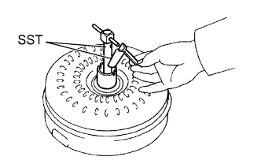
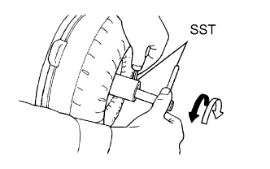
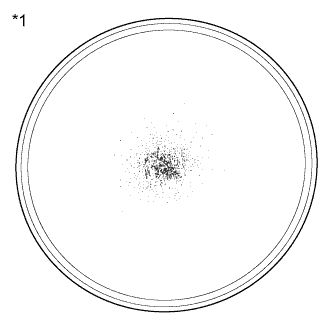
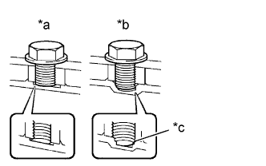
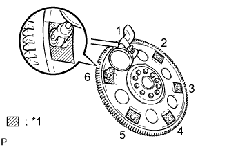

МУФТА ГИДРОТРАНСФОРМАТОРА И ВЕДУЩИЙ ДИСК > ПРОВЕРКА |
| 1. ПРОВЕРЬТЕ МУФТУ ГИДРОТРАНСФОРМАТОРА В СБОРЕ |
|  |
Проверьте муфту свободного хода.
Установите SST во внутреннее кольцо муфты свободного хода.
Расположите SST таким образом, чтобы он вошел в паз ступицы гидротрансформатора и в наружное кольцо муфты свободного хода.
|  |
Установив гидротрансформатор на бок, убедитесь, что при вращении SST против часовой стрелки происходит блокировка муфты, а при вращении SST по часовой стрелке муфта вращается свободно и плавно.
 | Заблокировано |
 | Разблокировано |
|  |
Оцените состояние муфты гидротрансформатора.
| *1 | Образец максимально допустимого количества порошка в жидкости автоматической трансмиссии. |
Проверьте выполнение следующих условий:
Замените трансмиссионную жидкость в муфте гидротрансформатора.
Если трансмиссионная жидкость в муфте гидротрансформатора обесцвечена и/или имеет неприятный запах, тщательно взболтайте ее и слейте, обратив муфту гидротрансформатора вверх.
Очистите и проверьте масляный радиатор и маслопровод.
По окончании проверки муфты гидротрансформатора или в случае замены трансмиссионной жидкости очистите масляный радиатор и маслопровод.
Если трансмиссионная жидкость мутная, проверьте масляный радиатор.
|  |
Не допускайте деформации муфты гидротрансформатора и повреждения шестерни масляного насоса.
| *a | Правильно |
| *b | Неправильно |
| *c | Нижняя часть повреждена |
Если на конце болта муфты гидротрансформатора и в нижней части болтового отверстия имеются какие-либо следы контакта с другими деталями, замените болт и муфту гидротрансформатора.
Убедитесь, что все болты имеют одинаковую длину.
Проверьте наличие всех пружинных шайб.
| 2. ПРОВЕРЬТЕ ВЕДУЩИЙ ДИСК |
Проверьте, не поврежден ли ведущий диск.
|  |
Установите индикатор часового типа и измерьте биение в 6 местах на контактных поверхностях муфты гидротрансформатора.
| *1 | Точка замера |